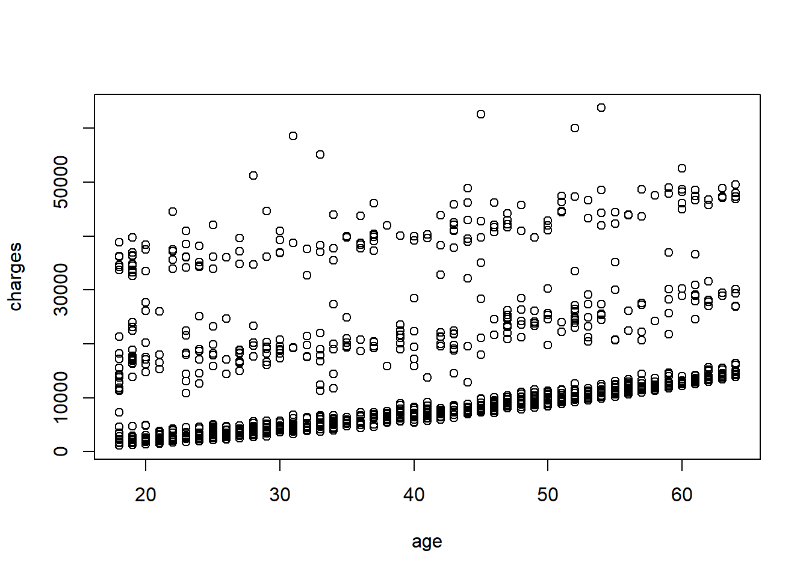
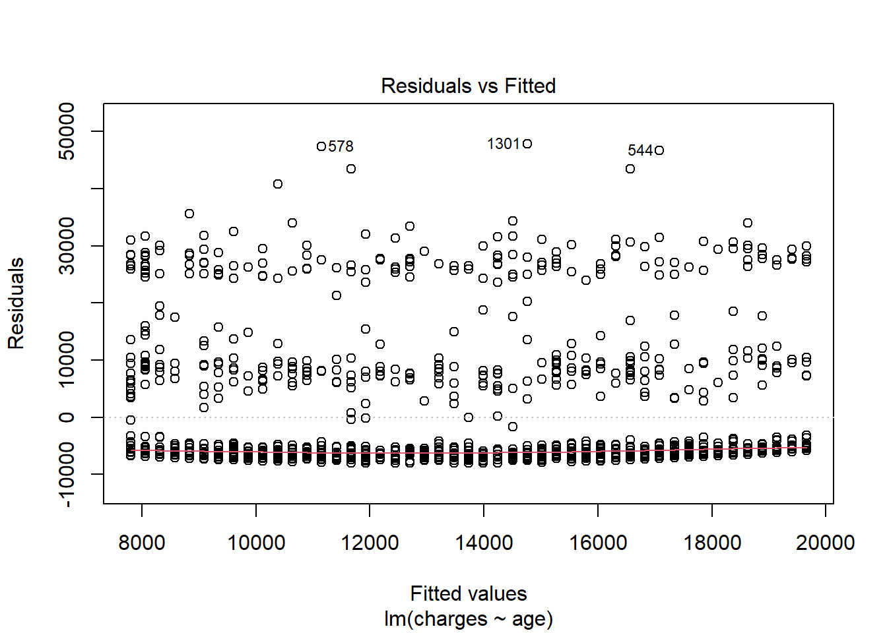
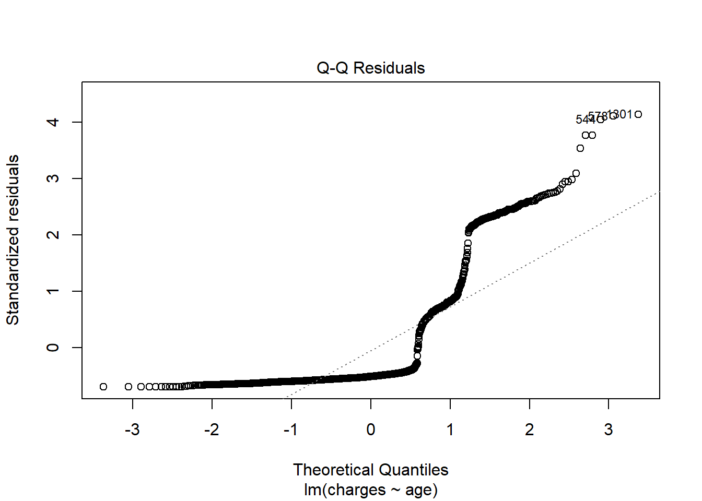
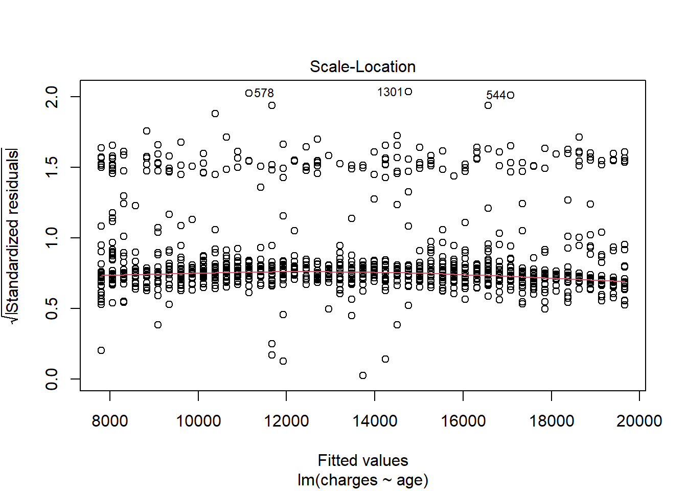
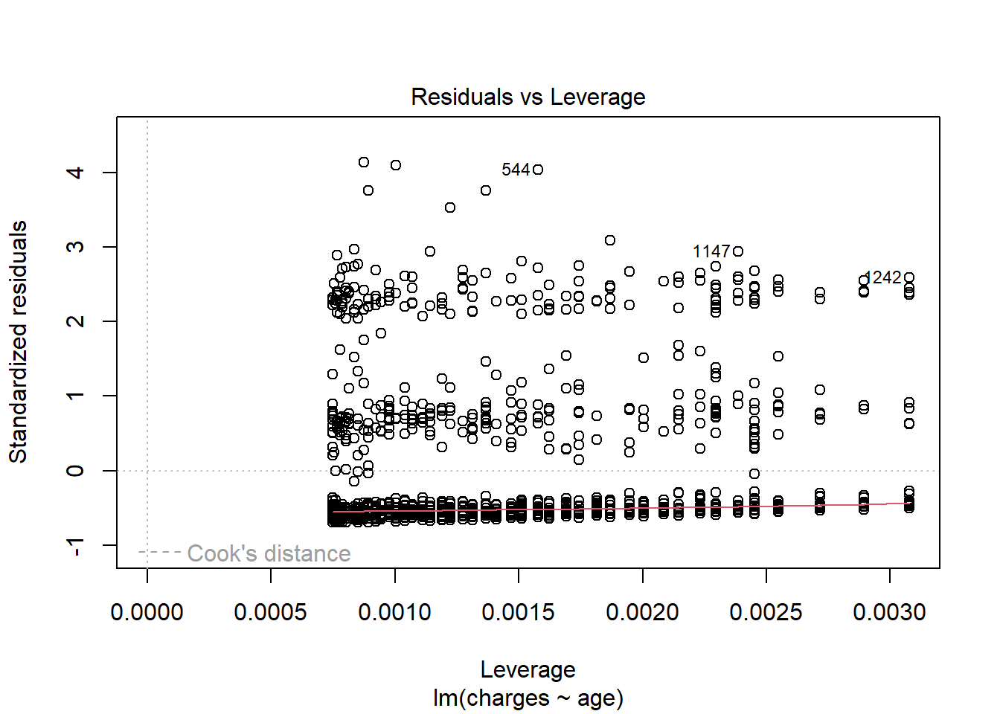
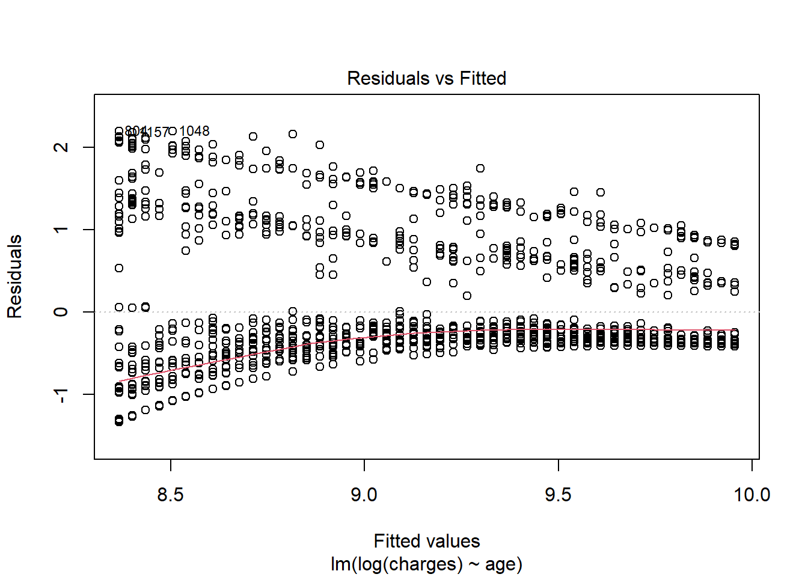
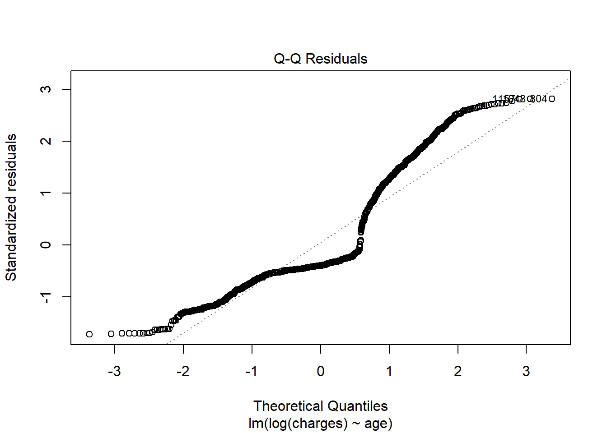
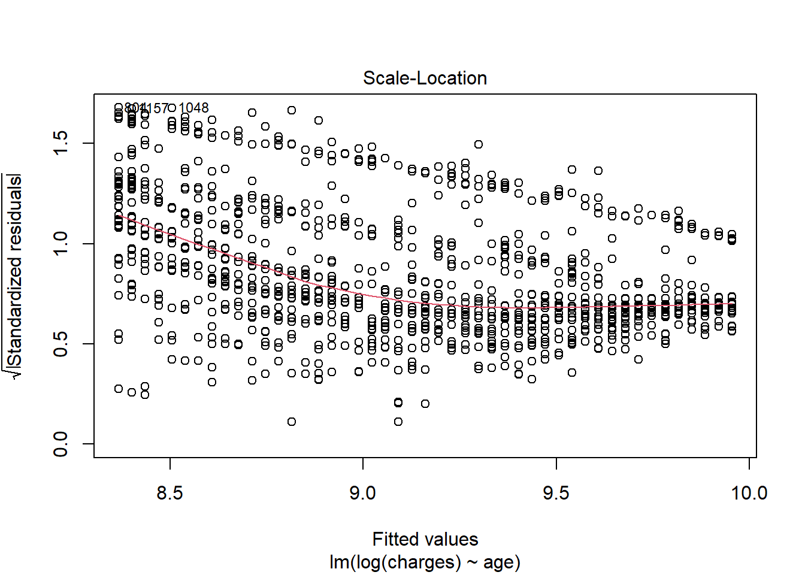
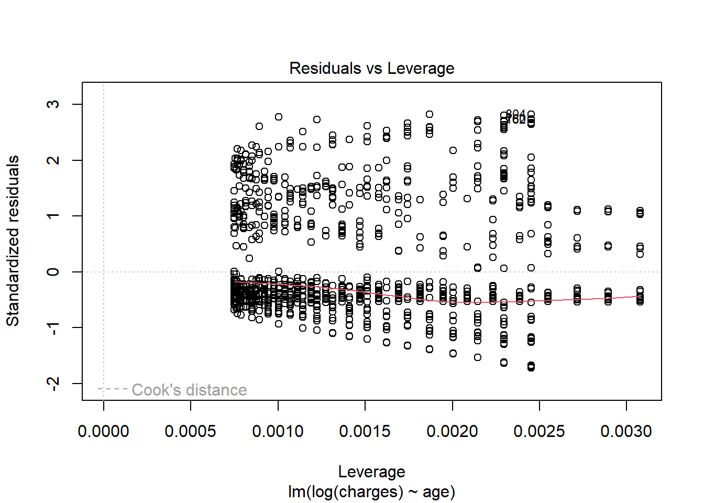

On the target-predictor graph, regression displays a line or curve that traverses each data point in a way that minimizes the vertical distance between the data points and the regression line. A statistical method for simulating the relationship between a dependent variable and a specified collection of independent variables is called linear regression. A linear regression describes the relationship between variables using a straight line. In simple terms, linear regression is a way to understand the relationship between two things (variables). The value of the regression coefficients that minimizes the models overall error determines the line of best fit in the data. Types of Linear Regression
There are two types of linear regression, Simple linear regression and multiple linear regression. Our discussion in this series will be on simple linear regression using R.
Assumptions of Simple Linear Regression
The assumptions of simple linear regressions are:
Linearity: Ensure there is a linear relationship between the independent (X) and dependent variable(Y), a straight line represents the line that best fits the data points.
Independence: The independent and dependent variables have a linear relationship. This indicates that when one variable changes, the other variable changes proportionately.
Normality: The errors are normally distributed
Equality of variance: The variability of the response does not increase as the value of the predictor increases. Case Study
LINE is a simple acroynm for remembering the assumptions of simple linear regression.
Example
In this example, we will be using a dataset on medical insurance cost. The dataset consists of information about the insurance buyers such as age, sex, BMI (body mass index), number of children, smoking habits and region. These variables serve as independent features, while the medical charges represent the dependent feature. The goal is to predict the medical charges based on the age of the individual.
Install packages
install.packages("tidyverse")
package 'tidyverse' successfully unpacked and MD5 sums checked
The downloaded binary packages are in
C:\Users\DOjekere\AppData\Local\Temp\Rtmpg7dB8F\downloaded_packages
install.packages("readxl")
package 'readxl' successfully unpacked and MD5 sums checked
The downloaded binary packages are in
C:\Users\DOjekere\AppData\Local\Temp\Rtmpg7dB8F\downloaded_packages
age sex bmi children
Min. :18.00 Length:1338 Min. :15.96 Min. :0.000
1st Qu.:27.00 Class :character 1st Qu.:26.30 1st Qu.:0.000
Median :39.00 Mode :character Median :30.40 Median :1.000
Mean :39.21 Mean :30.66 Mean :1.095
3rd Qu.:51.00 3rd Qu.:34.69 3rd Qu.:2.000
Max. :64.00 Max. :53.13 Max. :5.000
smoker region charges
Length:1338 Length:1338 Min. : 1122
Class :character Class :character 1st Qu.: 4740
Mode :character Mode :character Median : 9382
Mean :13270
3rd Qu.:16640
Max. :63770
# A tibble: 6 × 7
age sex bmi children smoker region charges
<dbl> <chr> <dbl> <dbl> <chr> <chr> <dbl>
1 19 female 27.9 0 yes southwest 16885.
2 18 male 33.8 1 no southeast 1726.
3 28 male 33 3 no southeast 4449.
4 33 male 22.7 0 no northwest 21984.
5 32 male 28.9 0 no northwest 3867.
6 31 female 25.7 0 no southeast 3757.
Check the last 6 rows of the dataset
tail(medical_cost)
# A tibble: 6 × 7
age sex bmi children smoker region charges
<dbl> <chr> <dbl> <dbl> <chr> <chr> <dbl>
1 52 female 44.7 3 no southwest 11412.
2 50 male 31.0 3 no northwest 10601.
3 18 female 31.9 0 no northeast 2206.
4 18 female 36.8 0 no southeast 1630.
5 21 female 25.8 0 no southwest 2008.
6 61 female 29.1 0 yes northwest 29141.
Rename sex variable to gender
medical_cost <- medical_cost |>mutate(across(c(sex: region ), as.factor)) |>rename(gender = sex)
Check for missing values
sum(is.na(medical_cost))
[1] 0
Check for duplicates
sum(duplicated(medical_cost))
[1] 1
There is one duplicate, so we drop the duplicate value and work with the unique values
The dataset changes from 1338 to 1337 because the duplicate value has been removed.
Since this is a simple linear regression, I will be checking how the age of a patient affects the hospital charges.
Visualizing the distribution of the age variable
age_plot <-ggplot(medical_cost, aes(x = age)) +geom_histogram(fill ="steelblue", color ="black", bins =10) +labs(title ="Distribution of Age", x ="Age", y ="Frequency") interactive_plot <- plotly::ggplotly(age_plot) interactive_plot
Checking if it meets up the Assumptions
1. Linearity
plot(charges ~ age, data = medical_cost)

This shows the linearity of age against charges.
2. Independence
cor(medical_cost$age, medical_cost$charges)
[1] 0.2990082
The correlation between age and charges is 0.3 which is not close to 1 or -1. This shows that the variables are independent of each other.
3. Normality and Homoscedasticity will be tested after fitting the model.
Fitting the regression model
model <-lm(charges ~ age, data = medical_cost)model
Call:
lm(formula = charges ~ age, data = medical_cost)
Coefficients:
(Intercept) age
3165.9 257.7
summary(model)
Call:
lm(formula = charges ~ age, data = medical_cost)
Residuals:
Min 1Q Median 3Q Max
-8059 -6671 -5939 5440 47829
Coefficients:
Estimate Std. Error t value Pr(>|t|)
(Intercept) 3165.9 937.1 3.378 0.000751 ***
age 257.7 22.5 11.453 < 2e-16 ***
---
Signif. codes: 0 '***' 0.001 '**' 0.01 '*' 0.05 '.' 0.1 ' ' 1
Residual standard error: 11560 on 1336 degrees of freedom
Multiple R-squared: 0.08941, Adjusted R-squared: 0.08872
F-statistic: 131.2 on 1 and 1336 DF, p-value: < 2.2e-16
plot(model)




The Q-Q residuals shows non-normality of the residuals.Hence, the dependent variable will be transformed to log to see if it will improve the normality of the residuals.
model2 <-lm(log(charges) ~ age, data = medical_cost) model2
Call:
lm(formula = log(charges) ~ age, data = medical_cost)
Coefficients:
(Intercept) age
7.74425 0.03455
summary(model2)
Call:
lm(formula = log(charges) ~ age, data = medical_cost)
Residuals:
Min 1Q Median 3Q Max
-1.3433 -0.4166 -0.3094 0.5000 2.1999
Coefficients:
Estimate Std. Error t value Pr(>|t|)
(Intercept) 7.744247 0.063336 122.27 <2e-16 ***
age 0.034545 0.001521 22.71 <2e-16 ***
---
Signif. codes: 0 '***' 0.001 '**' 0.01 '*' 0.05 '.' 0.1 ' ' 1
Residual standard error: 0.7813 on 1336 degrees of freedom
Multiple R-squared: 0.2786, Adjusted R-squared: 0.2781
F-statistic: 516 on 1 and 1336 DF, p-value: < 2.2e-16
The estimated effect of age on charges is 0.034. This means that for every one unit increase in age, the charges increases by 0.034. The p-value is less than 0.05 which means that the effect of age on charges is statistically significant. The R-squared value is 0.09 which means that 9% of the variation in charges can be explained by age. The standard error of the estimate is 0.1, with t value of 22.65 which means that the model is a good fit.
plot(model2)




The Residual vs Fitted shows that the residuals are homoscedastic and linear, and the Q-Q residuals shows that the residuals are normally distributed.
Therefore, fitting the regression model with the log of charges is a better fit. The regression equation is given as: Charges = 0.034*age + 7.5